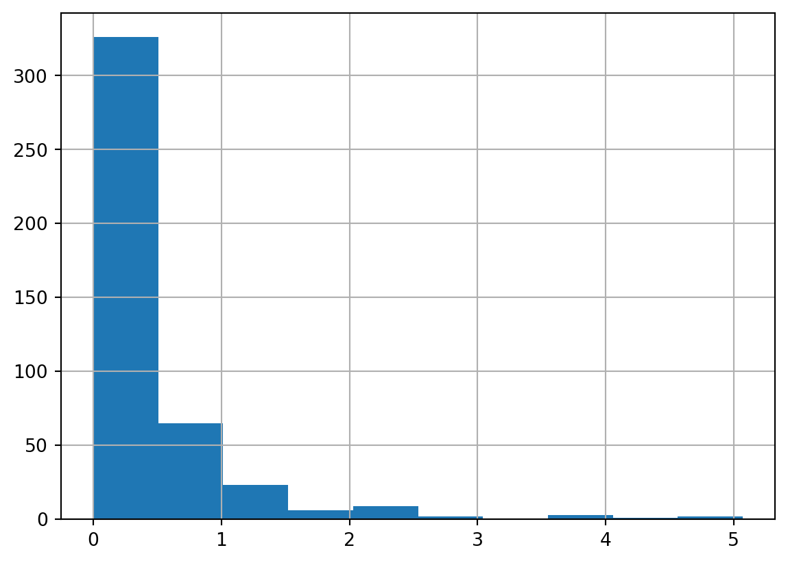

import pandas as pd
df=pd.DataFrame({
'제품':['사과','딸기','수박'],
'가격':[1800,1500,3000],
'판매량':[24,38,13]
})
print(df) 제품 가격 판매량
0 사과 1800 24
1 딸기 1500 38
2 수박 3000 13Sanghoo Ahn
July 12, 2024
다음 표의 내용을 데이터 프레임으로 만들어 출력해 보세요. (p.85)
import pandas as pd
df=pd.DataFrame({
'제품':['사과','딸기','수박'],
'가격':[1800,1500,3000],
'판매량':[24,38,13]
})
print(df) 제품 가격 판매량
0 사과 1800 24
1 딸기 1500 38
2 수박 3000 13mpg데이터 변수명 변경 (p.115)
mpg=pd.read_csv('C:/Users/USER/Documents/LS빅데이터스쿨/myportfolio/data/mpg.csv')
mpg_new=mpg.copy()
mpg_new=mpg_new.rename(columns={'cty':'city'})
mpg_new=mpg_new.rename(columns={'hwy':'highway'})
print(mpg_new) manufacturer model displ year cyl trans drv city highway fl \
0 audi a4 1.8 1999 4 auto(l5) f 18 29 p
1 audi a4 1.8 1999 4 manual(m5) f 21 29 p
2 audi a4 2.0 2008 4 manual(m6) f 20 31 p
3 audi a4 2.0 2008 4 auto(av) f 21 30 p
4 audi a4 2.8 1999 6 auto(l5) f 16 26 p
.. ... ... ... ... ... ... .. ... ... ..
229 volkswagen passat 2.0 2008 4 auto(s6) f 19 28 p
230 volkswagen passat 2.0 2008 4 manual(m6) f 21 29 p
231 volkswagen passat 2.8 1999 6 auto(l5) f 16 26 p
232 volkswagen passat 2.8 1999 6 manual(m5) f 18 26 p
233 volkswagen passat 3.6 2008 6 auto(s6) f 17 26 p
category
0 compact
1 compact
2 compact
3 compact
4 compact
.. ...
229 midsize
230 midsize
231 midsize
232 midsize
233 midsize
[234 rows x 11 columns]midway.csv를 불러와 데이터의 특징을 파악하세요. (p.130)
| PID | area | poptotal | popdensity | popwhite | popblack | popamerindian | popasian | popother | percwhite | ... | perchsd | percollege | percprof | poppovertyknown | percpovertyknown | percbelowpoverty | percchildbelowpovert | percadultpoverty | percelderlypoverty | inmetro | |
|---|---|---|---|---|---|---|---|---|---|---|---|---|---|---|---|---|---|---|---|---|---|
| count | 437.000000 | 437.000000 | 4.370000e+02 | 437.000000 | 4.370000e+02 | 4.370000e+02 | 437.000000 | 437.000000 | 437.000000 | 437.000000 | ... | 437.000000 | 437.000000 | 437.000000 | 4.370000e+02 | 437.000000 | 437.000000 | 437.000000 | 437.000000 | 437.000000 | 437.000000 |
| mean | 1437.338673 | 0.033169 | 9.613030e+04 | 3097.742985 | 8.183992e+04 | 1.102388e+04 | 343.109840 | 1310.464531 | 1612.931350 | 95.558441 | ... | 73.965546 | 18.272736 | 4.447259 | 9.364228e+04 | 97.110267 | 12.510505 | 16.447464 | 10.918798 | 11.389043 | 0.343249 |
| std | 876.390266 | 0.014679 | 2.981705e+05 | 7664.751786 | 2.001966e+05 | 7.895827e+04 | 868.926751 | 9518.394189 | 18526.540699 | 7.087358 | ... | 5.843177 | 6.261908 | 2.408427 | 2.932351e+05 | 2.749863 | 5.150155 | 7.228634 | 5.109166 | 3.661259 | 0.475338 |
| min | 561.000000 | 0.005000 | 1.701000e+03 | 85.050000 | 4.160000e+02 | 0.000000e+00 | 4.000000 | 0.000000 | 0.000000 | 10.694087 | ... | 46.912261 | 7.336108 | 0.520291 | 1.696000e+03 | 80.902441 | 2.180168 | 1.918955 | 1.938504 | 3.547067 | 0.000000 |
| 25% | 670.000000 | 0.024000 | 1.884000e+04 | 622.407407 | 1.863000e+04 | 2.900000e+01 | 44.000000 | 35.000000 | 20.000000 | 94.886032 | ... | 71.325329 | 14.113725 | 2.997957 | 1.836400e+04 | 96.894572 | 9.198715 | 11.624088 | 7.668009 | 8.911763 | 0.000000 |
| 50% | 1221.000000 | 0.030000 | 3.532400e+04 | 1156.208330 | 3.447100e+04 | 2.010000e+02 | 94.000000 | 102.000000 | 66.000000 | 98.032742 | ... | 74.246891 | 16.797562 | 3.814239 | 3.378800e+04 | 98.169562 | 11.822313 | 15.270164 | 10.007610 | 10.869119 | 0.000000 |
| 75% | 2059.000000 | 0.038000 | 7.565100e+04 | 2330.000000 | 7.296800e+04 | 1.291000e+03 | 288.000000 | 401.000000 | 345.000000 | 99.074935 | ... | 77.195345 | 20.549893 | 4.949324 | 7.284000e+04 | 98.598636 | 15.133226 | 20.351878 | 13.182182 | 13.412162 | 1.000000 |
| max | 3052.000000 | 0.110000 | 5.105067e+06 | 88018.396600 | 3.204947e+06 | 1.317147e+06 | 10289.000000 | 188565.000000 | 384119.000000 | 99.822821 | ... | 88.898674 | 48.078510 | 20.791321 | 5.023523e+06 | 99.860384 | 48.691099 | 64.308477 | 43.312464 | 31.161972 | 1.000000 |
8 rows × 25 columns
poptotal(전체 인구) 변수를 total로, popasian(아시아 인구) 변수를 asian으로 수정하세요.
mdw=mdw.rename(columns={'poptotal':'total'})
mdw=mdw.rename(columns={'popasian':'asian'})
print(mdw[['total','asian']]) total asian
0 66090 249
1 10626 48
2 14991 16
3 30806 150
4 5836 5
.. ... ...
432 304715 2699
433 46104 92
434 19385 43
435 140320 1728
436 73605 722
[437 rows x 2 columns]total,asian 변수를 이용해 ‘전체 인구 대비 아시아 인구 백분율’ 파생변수를 추가하고, 히스토그램을 만들어 분포를 살펴보세요.
import matplotlib.pyplot as plt
mdw['per_asian']=mdw['asian']/mdw['total']*100
print(mdw)
mdw['per_asian'].hist()
plt.show() PID county state area total popdensity popwhite popblack \
0 561 ADAMS IL 0.052 66090 1270.961540 63917 1702
1 562 ALEXANDER IL 0.014 10626 759.000000 7054 3496
2 563 BOND IL 0.022 14991 681.409091 14477 429
3 564 BOONE IL 0.017 30806 1812.117650 29344 127
4 565 BROWN IL 0.018 5836 324.222222 5264 547
.. ... ... ... ... ... ... ... ...
432 3048 WAUKESHA WI 0.034 304715 8962.205880 298313 1096
433 3049 WAUPACA WI 0.045 46104 1024.533330 45695 22
434 3050 WAUSHARA WI 0.037 19385 523.918919 19094 29
435 3051 WINNEBAGO WI 0.035 140320 4009.142860 136822 697
436 3052 WOOD WI 0.048 73605 1533.437500 72157 90
popamerindian asian ... percprof poppovertyknown percpovertyknown \
0 98 249 ... 4.355859 63628 96.274777
1 19 48 ... 2.870315 10529 99.087145
2 35 16 ... 4.488572 14235 94.956974
3 46 150 ... 4.197800 30337 98.477569
4 14 5 ... 3.367680 4815 82.505140
.. ... ... ... ... ... ...
432 672 2699 ... 7.667090 299802 98.387674
433 125 92 ... 3.138596 44412 96.330036
434 70 43 ... 2.620907 19163 98.854785
435 685 1728 ... 5.659847 133950 95.460376
436 481 722 ... 4.583725 72685 98.750085
percbelowpoverty percchildbelowpovert percadultpoverty \
0 13.151443 18.011717 11.009776
1 32.244278 45.826514 27.385647
2 12.068844 14.036061 10.852090
3 7.209019 11.179536 5.536013
4 13.520249 13.022889 11.143211
.. ... ... ...
432 3.121060 3.785820 2.590061
433 8.488697 10.071411 6.953799
434 13.786985 20.050708 11.695784
435 8.804031 10.592031 8.660587
436 8.525831 11.162997 7.375656
percelderlypoverty inmetro category per_asian
0 12.443812 0 AAR 0.376759
1 25.228976 0 LHR 0.451722
2 12.697410 0 AAR 0.106731
3 6.217047 1 ALU 0.486918
4 19.200000 0 AAR 0.085675
.. ... ... ... ...
432 4.085479 1 HLU 0.885746
433 10.338641 0 AAR 0.199549
434 11.804558 0 AAR 0.221821
435 6.661094 1 HAU 1.231471
436 7.882918 0 AAR 0.980912
[437 rows x 29 columns]
아시아 인구 백분율 전체 평균을 구하고, 평균을 초과하면 ‘Large’, 그 외에는 ’Small’을 부여한 파생변수를 만들어 보세요.
import numpy as np
avg_asian=mdw['per_asian'].mean()
mdw['amo_asian']=np.where((mdw['per_asian']>avg_asian),'Large','Small')
print(mdw) PID county state area total popdensity popwhite popblack \
0 561 ADAMS IL 0.052 66090 1270.961540 63917 1702
1 562 ALEXANDER IL 0.014 10626 759.000000 7054 3496
2 563 BOND IL 0.022 14991 681.409091 14477 429
3 564 BOONE IL 0.017 30806 1812.117650 29344 127
4 565 BROWN IL 0.018 5836 324.222222 5264 547
.. ... ... ... ... ... ... ... ...
432 3048 WAUKESHA WI 0.034 304715 8962.205880 298313 1096
433 3049 WAUPACA WI 0.045 46104 1024.533330 45695 22
434 3050 WAUSHARA WI 0.037 19385 523.918919 19094 29
435 3051 WINNEBAGO WI 0.035 140320 4009.142860 136822 697
436 3052 WOOD WI 0.048 73605 1533.437500 72157 90
popamerindian asian ... poppovertyknown percpovertyknown \
0 98 249 ... 63628 96.274777
1 19 48 ... 10529 99.087145
2 35 16 ... 14235 94.956974
3 46 150 ... 30337 98.477569
4 14 5 ... 4815 82.505140
.. ... ... ... ... ...
432 672 2699 ... 299802 98.387674
433 125 92 ... 44412 96.330036
434 70 43 ... 19163 98.854785
435 685 1728 ... 133950 95.460376
436 481 722 ... 72685 98.750085
percbelowpoverty percchildbelowpovert percadultpoverty \
0 13.151443 18.011717 11.009776
1 32.244278 45.826514 27.385647
2 12.068844 14.036061 10.852090
3 7.209019 11.179536 5.536013
4 13.520249 13.022889 11.143211
.. ... ... ...
432 3.121060 3.785820 2.590061
433 8.488697 10.071411 6.953799
434 13.786985 20.050708 11.695784
435 8.804031 10.592031 8.660587
436 8.525831 11.162997 7.375656
percelderlypoverty inmetro category per_asian amo_asian
0 12.443812 0 AAR 0.376759 Small
1 25.228976 0 LHR 0.451722 Small
2 12.697410 0 AAR 0.106731 Small
3 6.217047 1 ALU 0.486918 Small
4 19.200000 0 AAR 0.085675 Small
.. ... ... ... ... ...
432 4.085479 1 HLU 0.885746 Large
433 10.338641 0 AAR 0.199549 Small
434 11.804558 0 AAR 0.221821 Small
435 6.661094 1 HAU 1.231471 Large
436 7.882918 0 AAR 0.980912 Large
[437 rows x 30 columns]’Large’와 ’Small’에 해당하는 지역이 얼마나 많은지 빈도표와 빈도 막대 그래프를 만들어 확인해 보세요.